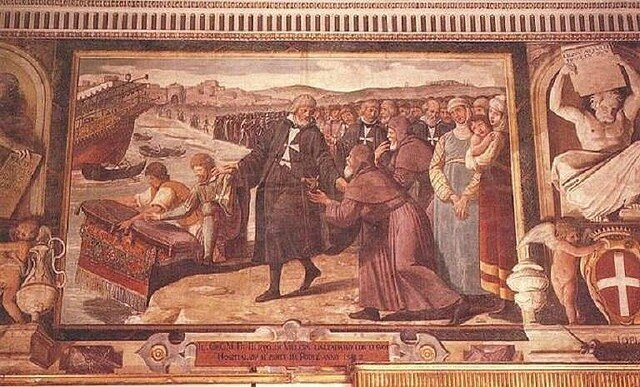
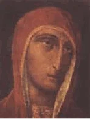
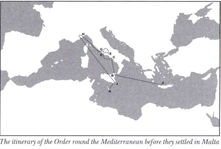
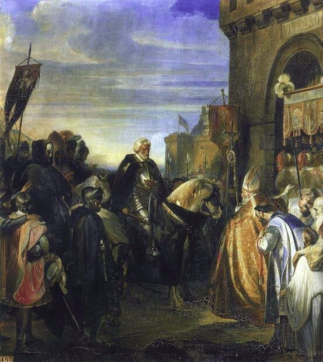

Способен ли человек, переживающий полосу депрессии, атакованный вирусами гриппа с непонятными индексами, напоминающими маркировку боевых отравляющих веществ, способен ли этот человек на креатив и эвристику? Не верьте тому, кто ответит на этот вопрос утвердительно. Поэтому уместным было бы в начале очередного поста поместить изображение советского Знака качества с разведенными в сторону руками: «Извините, но лучше не могу».
А теперь к делу.
1 января 1523 года лучи восходящего солнца осветили мачты большой флотилии иоаннитов, выходившей из Родоса. Втянувшись в Родосский пролив, флотилия взяла курс на Крит. На борту было около 6000 человек – 180 уцелевших рыцарей, солдаты ордена и жители острова, не пожелавшие оставаться под турецким владычеством. В составе флотилии находилась большая каракка ордена «Санта Мария», капитаном на которой был де Тринкетиль (de Trinquetille), еще одна каракка под командованием туркопольера Уильяма Вестона, галера «Санта Катерина» под флагом адмирала д'Эрсака, галера «Сен Джованни», командовал которой так хорошо нам известный Прежан де Биду, галион «Сен Бонавантюр» с коммандором Франсуа Бенедетти на борту, шхуна (goélette) «Жемчужина» (La Perle) под командованием коммандора Жана де Торфана, галера «Le Sicilien» под флагом шевалье Ж.Б. Шьяттеза и большое число транспортных судов, принадлежавших как ордену, так и флоту султана, причем последние были предоставлены в соответствии с одним из пунктов договора, подписанного между султаном и великим магистром.

Над караккой великого магистра, обычно ярко расцвеченной множеством флагов, развевался только один флаг – штандарт Великого магистра с изображением образа филермской божьей матери и девизом Afflictis spes mea rebus (В несчастии на тебя уповаю).

По преданию, лик Марии был написан св.Лукой Евангелистом.
Именно на «Санта Марии» находились все наиболее ценные реликвии ордена, в том числе: кусок креста, на котором был распят Христос, рука святого Иоанна Крестителя, образ богоматери из Филерма. Разместили на Большой каракке также архив ордена и большой ключ от города Родоса. Помимо этого, на борту каракки находились все раненые и больные, которых вывозили с Родоса. (Кстати, в популярной в советское время книге Р.Ю. Печниковой «Мальтийский орден в прошлом и настоящем» все корабли иоаннитов названы галерами. Эта ошибка тиражируется и в некоторых более поздних публикациях).
Переход на Крит был очень тяжелым. Разнородной по составу флотилией было очень трудно управлять, а море, которое в это время года обычно штормит, в зиму 1522-1523 года было особенно неспокойным. Несколько перегруженных судов затонуло, другие потеряли свои мачты, хотя людей с них удалось спасти. Особенно трудно пришлось галерам из-за большого некомплекта гребцов. Сулейман забрал всех рабов-мусульман с галер ордена, а также своих подданных, даже если они были свободными гребцами. А те их христиан, которые добровольно согласились занять места гребцов, оказались совершенно неспособными управляться с веслами в такую погоду.
К концу перехода, который продолжался десять дней, почти все люди на кораблях были больны. Великий магистр принял решение до конца зимы остаться на Крите. Во время нахождения иоаннитов на Крите к ним присоединились епископ Родоса Леонард Палестрино и весь родосский католический клир вместе с прихожанами, которые первоначально приняли решение остаться на Родосе, но сразу же после отхода основного каравана госпитальеров стали объектом преследований со стороны турок, которым не терпелось увидеть завоеванный ими остров свободным от всех проявлений католицизма.
Большая часть жителей Родоса, которые отправились с госпитальерами в изгнание, осталась на Крите, остальные отправились в Италию или на Сицилию и лишь несколько семей добрались до Мальты, где и осели.
На Крите, принадлежащем в то время Венеции, иоанниты находились два месяца, приводя в порядок свой флот. В течение этого периода Великий магистр был принят губернатором острова, а также генералом галер Венеции Доминико Тревизано. В ходе беседы с последним магистр высказал недоумение, почему Венеция, имея на Крите 60 галер, не пришла на помощь осажденному Родосу. Генерал не смог ответить магистру ничего вразумительного и «чувствовал себя сконфуженным». Да и что он мог ответить, если сенат Светлейшей, едва получив известие о падении Родоса, направил в Стамбул посла с поздравлениями султану Сулейману в связи с этим успехом. В ответ султан направил в Венецию своего посла с выражением благодарности и надежды на «совместные дальнейшие шаги по искоренению пиратства, препятствующего развитию торговли в Средиземном море».
К началу марта корабли были отремонтированы и флотилия покинула Крит. Однако противный ветер вынудил их вернуться на остров. Только со второй попытки удалось достичь порта Мессина на Сицилии.

Но на острове свирепствовала чума, и после краткой остановки флотилия иоаннитов направилась в Неаполь, и, наконец, 1 июля 1523 года прибыла в Чивитавеккью. Оставив корабли в гавани, великий магистр Филипп Вилье де л'Иль-Адам направился в Рим на встречу с папой Адрианом VI. Изданная папой в результате переговоров булла возобновляла все права иоаннитов и требовала от всех правителей христианского мира оказывать им содействие. Однако вскоре после этого папа умер, и началась острая борьба за его место среди европейских соперников. После ряда интриг 26 ноября 1523 года папой был избран Клемент VII, француз и бывший госпитальер. 18 декабря новый папа принял де л'Иль-Адама. Он предоставил для Конвента госпитальеров резиденцию в Витербо, в 100 км к северу от Рима и разрешил постоянное базирование орденского флота в Чивитавеккье.

Филипп Вилье де л'Иль Адам вступает в Витербо (Auguste-Hyacinthe Debay, 1842)
Но война и чума в Италии вынудили орден в 1527 году покинуть Витербо и направиться по приглашению герцога Савойского в Ниццу.
Все это время Филипп Вилье де л'Иль-Адам вел активные переговоры с папой и европейскими правителями с целью получения помощи для возвращения на Родос. Благо военно-политическая обстановка в восточном Средиземноморье способствовала этому. Сначала госпитальеры возлагали надежду на организацию антитурецкого восстания на острове, которое могло бы облегчить возвращение Родоса. Затем надежды подогрел бунт Ахмед Паши в Египте против Сулеймана. Имеются свидетельства, что де л'Иль-Адам в 1525 году вел тайные переговоры о возвращении Родоса в обмен на использование военного потенциала иоаннитов в борьбе против Мустафа Паши. Но европейские державы отказали великому магистру в поддержке, не желая открывать еще один фронт войны с турками. Бунт в Египте был подавлен.
В 1526 году османы вторглись в Венгрию. 29 августа в битве при Мохаче был убит венгерский король Лайош II Ягеллон. Его преемником был избран Фердинанд, брат императора Священной Римской империи Карла V. Оппозиция этому назначению привела к развязыванию в стране гражданской войны. Это способствовало дальнейшим военным успехам турок в Европе и в 1529 году они осадили Вену. Продвижение османов отмечалось и в Средиземноморье. В 1530 году Хайреддин Барбаросса захватил Алжир. Обстановка становилась критической. На этом фоне проблемы ордена госпитальеров для европейских правителей казались малозначительными.
Надеюсь, что продолжение последует.